全部需求總表與試作對照
2026-11-14 更新｜整理 10/13 通話、第一階段報告、11/5 會議與 11/13 兩通電話提到的所有事項。難易度：易 1–3 天；中 1–3 週，或要第三方帳號／審核；難 多週或需多方配合。標 ▶ 的列可以點開，看修改前後截圖與說明。
重點：陳 Sir 三次提到最在意的是：Amazon 要有人接手營運、網站合一並改成研發定位、AI 幫忙接客和寫文章。網站部分已做出試作網站可以點著看（只是展示，不寄信、不收款，也還沒取代正式官網）；Amazon 還沒接手，要等子帳號。31 項裡易 12、中 15、難 3、未評估 1，主要等的是帳號權限與資料。
進度用語：「試作可看」＝試作網站上能點開；「只有外觀」＝畫面做好但沒接真的信箱或金流；「未開始」＝等資料或權限。
一、Amazon（Bobi Boba）
| # | 事項 | 難易 | 現在進度 | 陳 Sir 要提供 |
|---|---|---|---|---|
| 1 | 代營運：文案合規、成分對齊標籤、週報、庫存提醒 | 易 | 未開始 | 子帳號、標籤照片、庫存 |
| 2 | 查舊款為什麼買不到 | 中 | 未開始 | 子帳號 |
| 3 | 用 Amazon 官方 AI 工具看數據、訂廣告策略 | 中 | 未開始 | 子帳號、廣告預算 |
| 4 | 標題與圖片優化；DIY 組杯數寫法統一 | 易 | 未開始 | 標籤照片 |
| 5 | Amazon 品牌註冊 | 中 | 未開始 | 商標資料 |
Amazon 接手後實際做什麼（點開）
為什麼：10/13 00:09、10:01 陳 Sir 說「我想有一個團隊可以幫我營運他」，10:11 提到要看競爭對手、操作後台、告訴他什麼時候要進貨；11/5 42:01 再提希望 AI 讀 Amazon 資料、訂廣告策略。
接手後每週做的事：
- 檢查商品頁文案與成分是否和標籤一致，不寫違規的健康宣稱。
- 看庫存與銷售，快不夠時提醒補貨。
- 看同業價格、評價與排名變化。
- 第二個月起，如果要做小額廣告，用 Amazon 官方 AI 工具看數據、提出廣告建議。
- 每週一份週報；任何修改先給陳 Sir 核可才動。
現在：只做過公開資料分析（見 Amazon 代營運說明），還沒進後台。
費用（已列在 AI 自動化提案）：第 1 個月 NT$20,000；之後每月 NT$15,000 起。
二、現有網站
| # | 事項 | 難易 | 現在進度 | 陳 Sir 要提供 |
|---|---|---|---|---|
| 6 | 手機圖示、「How to make it」修正 | 易 | 試作可看；正式官網未改 | 網站權限 |
| 7 | 首頁改研發定位、研發區塊與影片上移 ▶ | 易 | 試作可看；正式官網未改 | 網站權限 |
| 8 | 首頁影片換高畫質 | 易 | 未開始 | 影片原始檔 |
| 9 | 網站優化清單 7 件＋1 個錯字 | 易 | 正式官網未改 | 網站權限 |
| 10 | 商店 3 件修正（手機 58 → 80 分） | 中 | 正式官網未改 | WordPress 權限 |
| 11 | 40 篇文章補進網站地圖 | 易 | 未開始 | Search Console |
| 12 | 詢價追蹤 | 易 | 未開始 | Google Analytics |
#7 首頁：讓客人第一眼知道沅川能幫忙研發（修改前後）
為什麼：11/5 00:00 陳 Sir 說要讓大家知道沅川專業在甜食與飲品研發；00:25「下面的研發的這一塊拉到上面來」；02:17 不要只介紹成珍奶原料供應商。
做了什麼：試作首頁第一屏改成研發定位，放研發影片入口與 5 步驟客製流程；手機上影片和「How to make it」可以點開。
對陳 Sir 的好處：想開發新品或找代工的客人，不用往下捲就知道可以找沅川談。
還差什麼：正式官網還沒改；需要可公開的研發案例與影片原始檔（影片畫質要原檔才能真的變清楚）。網站速度前後分數要在同樣條件下重測，目前還沒有可用的新數字。
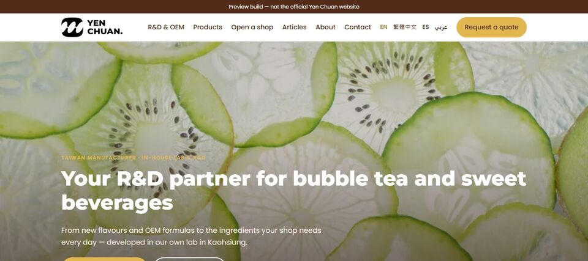
三、網站整合
| # | 事項 | 難易 | 現在進度 | 陳 Sir 要提供 |
|---|---|---|---|---|
| 13 | 官網、部落格、商城合成一個網站，舊網址轉址 ▶ | 難 | 試作可看（308 商品、206 文章） | 三邊管理權限、網域 |
| 14 | 樣品線上刷卡 | 中 | 只有外觀 | 公司申請金流帳號 |
| 15 | 繁體中文、阿拉伯文、西班牙文頁面 ▶ | 中 | 試作可看（各 10 頁起） | 重點產品清單 |
| 16 | 用講的就能改網站（改完陳 Sir 核可才上線） | 中 | 未開始 | 網站合一後 |
| 17 | 網站帳號、網域、主機移到公司名下 | 中 | 未開始 | 現在的帳號資訊 |
#13、#14 網站合一與樣品付款（修改前後）
為什麼：11/5 13:15 陳 Sir 問能不能把兩個網址變成一個；11/13 第二通 00:54 再說「要把網站和商城併成一個」；11/5 19:02、19:13 希望樣品直接線上刷卡，業務不用追匯款。
做了什麼：官網、部落格、商城的內容整合到同一個試作站：308 個商品、38 個分類、206 篇文章，可搜尋、可分頁；舊網址對照已整理好。樣品付款做了畫面。
對陳 Sir 的好處：客人從研發介紹到看商品、詢價、付樣品費都在同一個網站，不必跳站；正式搬家時舊網址能轉過去，減少搜尋排名掉落。
還差什麼：會員、訂單、真的刷卡與正式資料搬遷都還沒做，需要原網站的管理權限、備份與公司金流帳號。
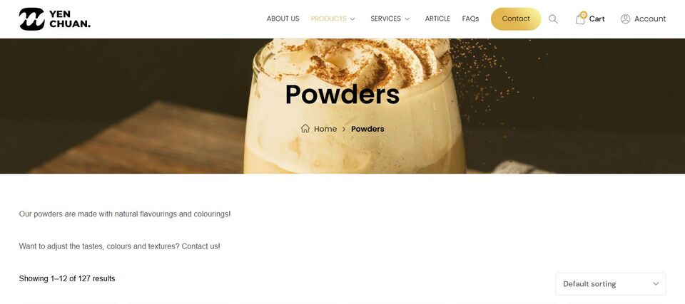
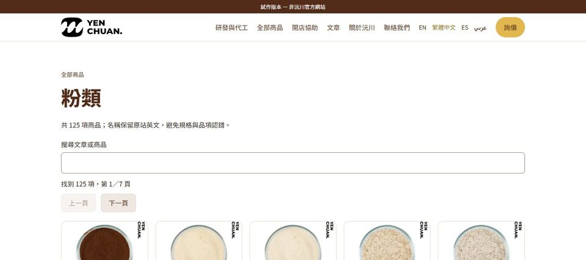
#15 多語系：中文一路中文、阿拉伯文由右往左（修改前後）
為什麼：11/5 07:09、15:11 陳 Sir 說想做多語系、讓更多人看到沅川；15:54 問到阿拉伯語。
做了什麼：繁體中文、阿拉伯文、西班牙文各有頁面；選了中文就一路中文（選單、商品、詢價都中文）；阿拉伯文整頁由右往左，商品從右邊排起。
對陳 Sir 的好處：華語客人不會中途跳回英文；中東客人看到的版面符合閱讀習慣，像是為他們做的網站。
還差什麼：不是整站都翻譯；商品原名與舊文章仍是英文。阿拉伯文、西班牙文需要懂當地語言的人核對用語。
注意：下面「修改前」是我們上一版試作，不是原官網（原官網沒有這些語言）。
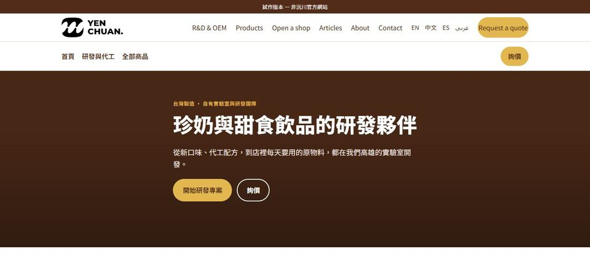
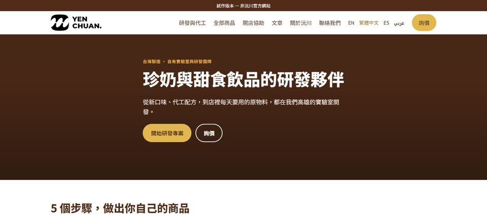
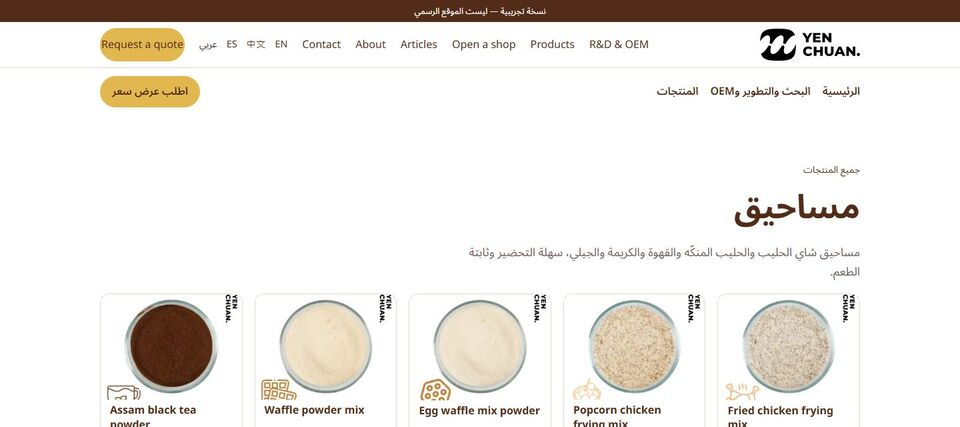
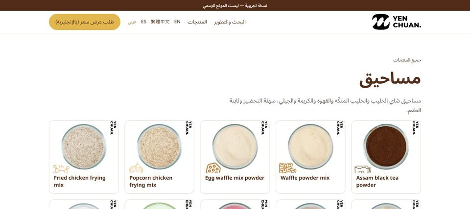
四、AI 自動化
| # | 事項 | 難易 | 現在進度 | 陳 Sir 要提供 |
|---|---|---|---|---|
| 18 | Email 詢價 AI 先回 ▶ | 中 | 只有外觀 | 信箱權限、常見問答、價目規則 |
| 19 | WhatsApp 詢價 AI 先回 | 難 | 未開始 | 公司申請 Meta 商業帳號 |
| 20 | AI 先篩客人，再分給業務 | 中 | 只有外觀 | 同 18 |
| 21 | 參考龍頭題目，每月寫原創文章 ▶ | 易 | 3 篇示範文章 | 素材、想寫的題目 |
| 22 | 每天看同業龍頭在寫什麼 | 易 | 已在跑（每天看 10 個同業網站） | 不用 |
| 23 | AI 助理：Email 分重要、草擬回覆 | 中 | 未開始 | 信箱權限 |
#18–#20 詢價：AI 先篩、陳 Sir 核可（修改前後）
為什麼：11/5 25:49 陳 Sir 說業務有時無法即時回覆；26:46 希望 AI 不只回第一封，能和客人持續往返；26:54 遇到問題先交給沅川確認；44:15 業務在客人要下單時再介入。
做了什麼：詢價表單先問國家、用量、交期、進口方式、要不要樣品，並示範回覆內容。
正式做的方式：
- AI 先讀客人來信，判斷是不是真的買家、要什麼。
- 一般問題（產品、最低訂購量、樣品）AI 先回；價格、交期、例外狀況先草擬，給陳 Sir 核可再寄。
- 每次陳 Sir 修改，就記成規則；越用越少需要人看。
- 客人要下單時轉給業務。
對陳 Sir 的好處：業務一收到詢價就有完整資料，不必來回追問；客人很快收到回覆，不會等到隔天。
還差什麼：目前不寄信、不呼叫 AI；要接信箱並整理常見問答與報價規則。
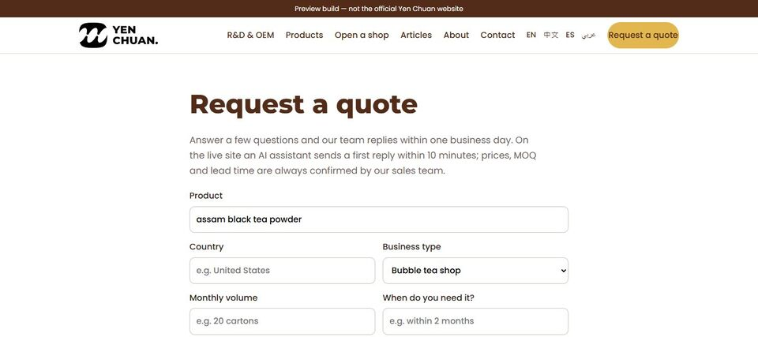
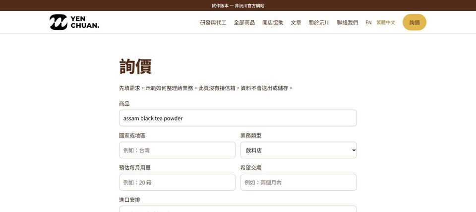
#21、#22 文章：從同業題目到陳 Sir 核可發布（修改前後）
為什麼：10/13 09:42 談到由陳 Sir 提供素材、AI 撰寫、陳 Sir 審核後發布；11/5 46:00 希望把想法丟給 AI 寫成文章；11/13 第一通 00:32 提到參考龍頭公司在寫什麼。
做了什麼：206 篇文章集中、可搜尋分頁；3 篇 AI 示範文章（數字都對過商品資料）；每天自動看 10 個同業網站有沒有新文章，當作題目來源。
對陳 Sir 的好處：每月有固定題目，用沅川自己的資料寫原創文章，長期帶來搜尋流量與詢價。只借題目、不抄別人文章，避免著作權與 Google 降低排名的風險。
還差什麼：需要陳 Sir 的素材或一句想法；每篇發布前陳 Sir 核可，不會自動發文。
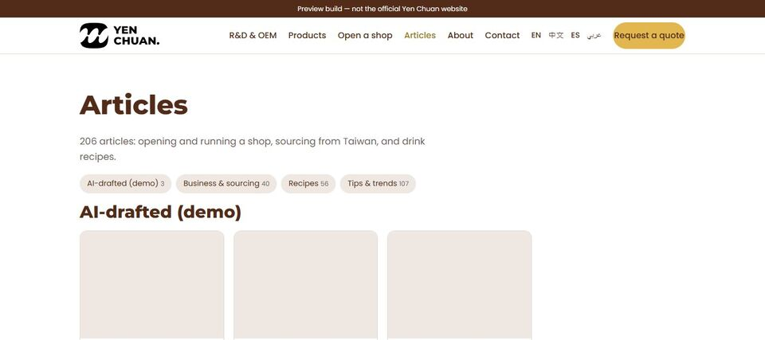
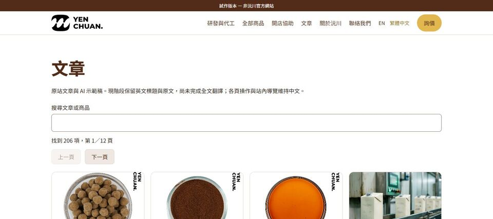
五、美國市場與批發
| # | 事項 | 難易 | 現在進度 | 陳 Sir 要提供 |
|---|---|---|---|---|
| 24 | 英文「下單方式與樣品」頁 | 易 | 試作有部分內容 | 箱規、最低訂量、付款、交期 |
| 25 | 珍珠、糖漿分類頁搜尋診斷 | 中 | 未開始 | Search Console |
| 26 | 經銷成本表 | 中 | 未開始 | 出廠價、報關行 |
| 27 | 採購小試（最多 5 家） | 難 | 未開始 | 詢價紀錄、樣品規則 |
| 28 | FDA 工廠登記續登（12/31 前） | 易 | 未開始 | 貴公司自行線上續登 |
| 29 | 各產品稅號與關稅確認 | 中 | 未開始 | 報關行 |
| 30 | Bobi Boba 網站 | 未評估 | 未開始 | — |
| 31 | 公司進貨、出貨管理提醒（11/13 提到） | 中 | 未開始；先確認是 Amazon 庫存還是公司整體 | 現在的進出貨紀錄方式 |
六、接下來怎麼做（建議，陳 Sir 勾選）
網站合一照試作的方向做正式版；詢價 AI 和 Amazon 代營運可以同時開始。每一塊可單獨買，不抽成。
| 勾選 | 項目 | 包含 # | 費用（未稅） |
|---|---|---|---|
| ☐ | 手機問題＋首頁研發區塊 | 6、7 | NT$8,000 |
| ☐ | 官網＋部落格＋商城合一、樣品刷卡、舊網址轉址 | 13、14、17 | NT$80,000 |
| ☐ | 阿拉伯文、西班牙文各 10 頁 | 15 | 每語 NT$8,000 |
| ☐ | 詢價 AI 先回（Email＋WhatsApp） | 18–20 | 建置 NT$15,000＋每月 NT$5,000 |
| ☐ | 每月 4 篇 AI 文章 | 21、22 | 每月 NT$12,000 |
| ☐ | Amazon 代營運 | 1–5 | 第 1 個月 NT$20,000，之後每月 NT$15,000 起 |
另計：主機、網域、金流手續費、WhatsApp 與 AI 使用費。
七、陳 Sir 要提供的資料
現在就能給（手邊有的先給，不用另外整理）：
| 資料 | 用途 | 可開工 |
|---|---|---|
| 優先產品清單 | 先圈定網站與 Amazon 要處理的商品 | 1、4、15 |
| 各款標籤、包裝照片 | 核對成分與份量，避免寫錯 | 1、4 |
| 可公開的研發案例、影片原始檔 | 首頁研發區塊用真實內容、影片變清楚 | 7、8 |
| 常見問答、報價與樣品規則、幾封遮掉客人名字的詢價往返 | 讓 AI 知道哪些能答、哪些要問陳 Sir | 18–20、24 |
| 想寫的題目或一句想法 | 示範「丟想法→草稿→核可」 | 21 |
正式做時再給（選了哪一項才開那一項的權限）：
| 資料 | 可開工 |
|---|---|
| Amazon 子帳號、庫存與廣告報表 | 1–5 |
| 網站、網域、商城管理權限與備份 | 6、7、9–17 |
| 業務信箱、WhatsApp 商業帳號 | 18–20、23 |
| 公司金流帳號、樣品價格與運費 | 14 |
| 出廠價、報關行、詢價紀錄 | 26、27、29 |
不要給：共用主帳號密碼或驗證碼、完整信用卡號、整個信箱或完整客戶名單。